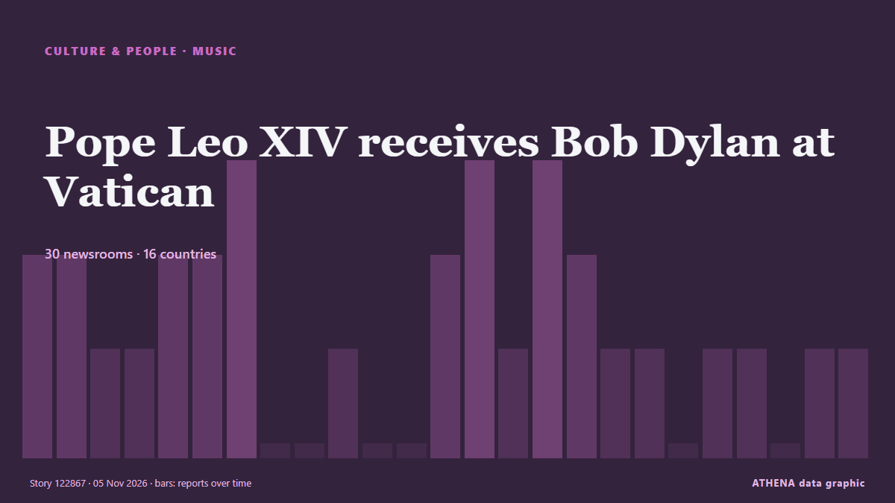

Pope Leo XIV receives Bob Dylan at Vatican

(ANSA) - ROME, 04 NOV - Bob Dylan met Pope Leo XIV at the Vatican Wednesday. из ANSA English
Независимые источники: 30 изданий в 16 странах, с 4 нояб.; первым сообщил ANSA English; освещение на пике. Спорт и культура публикуются без оценки риска. Уверенность — 90 % (высокая); подтверждают независимые источники: 30 изданий, средняя надёжность источников — 75 %. СМИ по странам: Соединенные Штаты (8), Великобритания (5), Италия (2). Освещение: с 4 нояб. по 5 нояб., 25 ч.
Что изменилось: 29 новых сообщений от 27 редакций за 24 часа до 5 нояб..
Первый заголовок: Bob Dylan meets Pope Leo at the Vatican
Заголовки приводятся на английском языке, как они были опубликованы.
Коротко в цифрах
Отобрано, оценено и написано по опубликованной методологии ATHENA. Ни один редактор не вмешивается в отдельные события. Как это создаётся ›
| 04 Nov 16:40 UTC | 2 |
|---|---|
| 04 Nov 17:40 UTC | 2 |
| 04 Nov 18:40 UTC | 1 |
| 04 Nov 19:40 UTC | 1 |
| 04 Nov 20:40 UTC | 2 |
| 04 Nov 21:40 UTC | 2 |
| 04 Nov 22:40 UTC | 3 |
| 04 Nov 23:40 UTC | 0 |
| 05 Nov 00:40 UTC | 0 |
| 05 Nov 01:40 UTC | 1 |
| 05 Nov 02:40 UTC | 0 |
| 05 Nov 03:40 UTC | 0 |
| 05 Nov 04:40 UTC | 2 |
| 05 Nov 05:40 UTC | 3 |
| 05 Nov 06:40 UTC | 1 |
| 05 Nov 07:40 UTC | 3 |
| 05 Nov 08:40 UTC | 2 |
| 05 Nov 09:40 UTC | 1 |
| 05 Nov 10:40 UTC | 1 |
| 05 Nov 11:40 UTC | 0 |
| 05 Nov 12:40 UTC | 1 |
| 05 Nov 13:40 UTC | 1 |
| 05 Nov 14:40 UTC | 0 |
| 05 Nov 15:40 UTC | 1 |
| 05 Nov 16:40 UTC | 1 |
Откуда эти цифры
Значимость
Риск
Уверенность
Освещение — кто сообщил и когда
заголовок в оригинале · открывает источник- ANSA English · ИталияBob Dylan meets Pope Leo at the Vatican
- ANSA English · ИталияBob Dylan meets Pope Leo at the Vatican
- Pitchfork news · Соединенные ШтатыBob Dylan, Wearing Hoodie, Meets Pope
- The Straits Times · СингапурPope receives black-clad musician Bob Dylan at Vatican
- Rolling Stone · Соединенные ШтатыBob Dylan Meets With Pope Leo XIV in a Private Audience
- ABC News (International) · Соединенные ШтатыBob Dylan comes knockin' on pope's door as Leo welcomes legend to Vatican
- Stuff · Новая ЗеландияBob Dylan wore a really strange outfit to meet the Pope
- Bangkok Post — page reader · ТаиландPope receives black-clad Bob Dylan
- Free Malaysia Today · МалайзияPope receives black-clad Bob Dylan
- Billboard · Соединенные ШтатыWith God on Their Side: Bob Dylan & Pope Leo XIV Commune at the Vatican
- PBS NewsHour · Соединенные ШтатыPope Leo XIV welcomes Bob Dylan to the Vatican in a brief visit
- The New York Times (World) · Соединенные ШтатыBob Dylan Meets With Pope Leo
- New Straits Times · Малайзия#SHOWBIZ: Pope receives black-clad Bob Dylan
- BBC News · ВеликобританияPope Leo hosts Bob Dylan at official residence in Rome
- Times of India · ИндияPope Leo XIV meets Bob Dylan at the Vatican
- Nile Post · УгандаPope Leo hosts Bob Dylan at official residence in Rome
- Financial Times - Markets · ВеликобританияEuropean rates go electric!
- eNCA · Южно-Африканская РеспубликаPeru, the country that shaped Leo's path to pope
- eNCA · Южно-Африканская РеспубликаPope receives black-clad Bob Dylan
- NPR · Соединенные ШтатыBob Dylan comes knockin' on pope's door as Leo welcomes legend to Vatican
- The Business Times · СингапурWhen the American bard met the American pope
- TheJournal.ie · ИрландияBob Dylan gives Pope Leo his autobiography during private audience
- Arab Times · КувейтAfter 'Knockin' on Heaven's Door', Bob Dylan Meets Pope Leo XIV at Vatican
- ProtoThema English ·Bob Dylan meets Pope Leo XIV at the Vatican wearing a hood, united by their opposition to war
- Türkiye Today · ТурцияPope Leo XIV receives Bob Dylan at Vatican
- Evening Standard (London) · ВеликобританияBob Dylan presents Pope with copy of autobiography during meeting at Vatican
- BusinessWorld · ФилиппиныBob Dylan blows in for meeting with Pope Leo at Vatican
- NME · ВеликобританияBob Dylan meets Pope Leo XIV at Vatican (while wearing a hoodie)
- The Independent · ВеликобританияThe gifts Bob Dylan and Pope Leo exchanged during their 'brief' meeting at Vatican
- Global News (World) · КанадаBob Dylan meets with Pope Leo XIV at the Vatican
- Billboard · Соединенные ШтатыSix Other Musicians Who’ve Had an Audience With Pope Leo